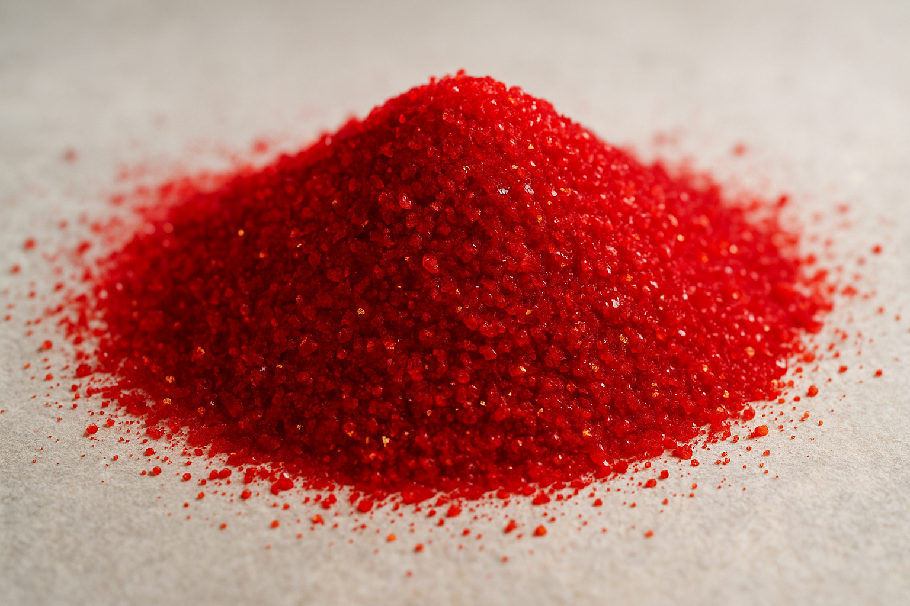

Rubedo is the third and final stage of the alchemical Great Work — the moment in which purified components are brought back together as a unified, working whole. The first two stages reduce the world to its components. The third makes them live.
Most quantitative firms stop at Albedo. They isolate clean signals and call the work done. The harder discipline — and the one that compounds into capacity-bearing alpha — is the recombination: taking purified factors, structural patterns, regimes, and trends, and forging them into a single book whose distributional signature is a designed object rather than an accident of correlations.
Four Transmutations, One Stone Stat Arb, Factor Investing, Trend Following, Macro — bound under Tail Risk Parity, breathed by Pervasive Adaptive Inference.Rubedo Capital is built around four systematic strategies, each engineered to contribute a different distributional shape to the book. They are composed under Tail Risk Parity — a framework that prices diversification where diversification matters, and not in the body of the distribution where it is cheap. The whole stack re-parameterizes itself continuously in response to the conditions it observes: Pervasive Adaptive Inference, the breath that keeps the stone alive.